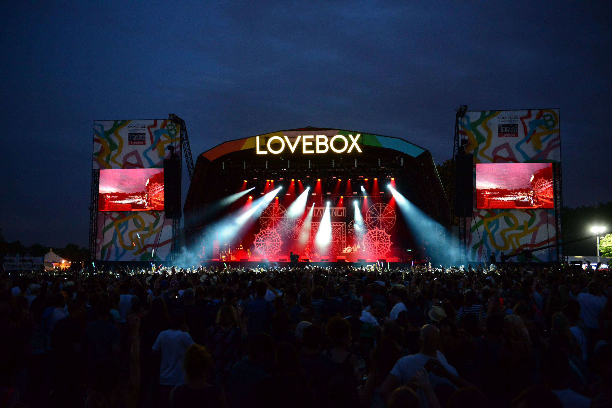
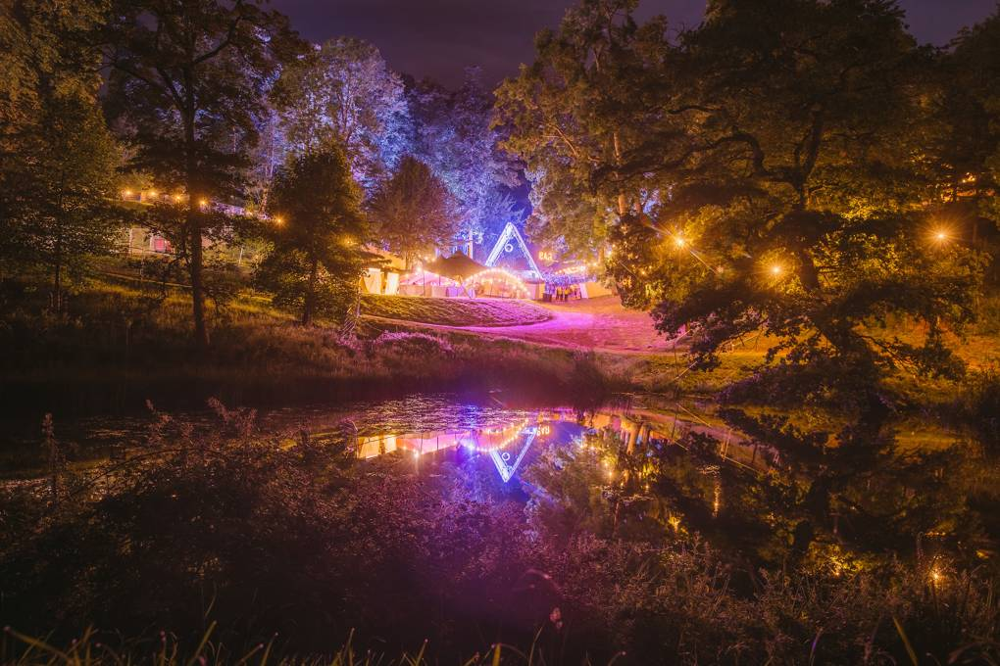
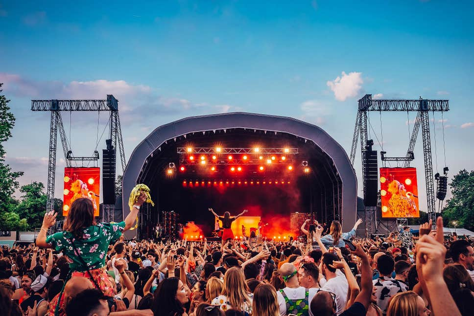
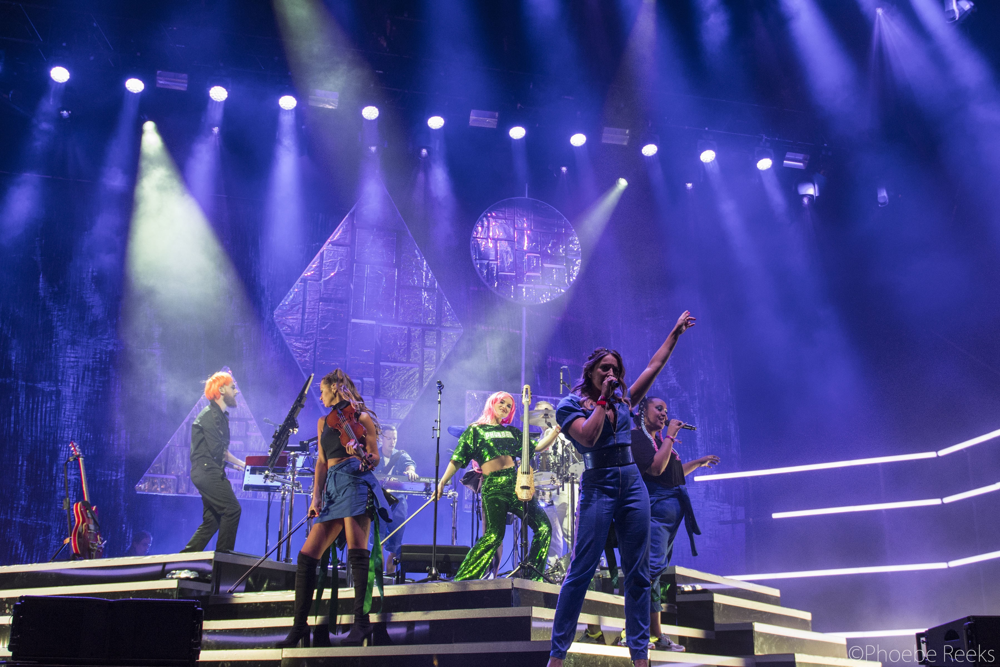

BOOMTOWN FAIR,HAMPSHIRE
There are festivals that have a bit of a theme to them and then there’s Boomtown. This wonderland of an event goes so deep into its ever-evolving immersive plot that it’s difficult to know where the story stops and where reality begins, particularly after partying with the gleefully chaotic hordes for a few days. The result is a brilliantly imaginative experience that’s as much about production, performers and being part of the many ‘districts’ as it is about the music, which goes in heavy on beats and bass, alongside dub, reggae, soul, disco and some punky live acts.
LOVEBOX, GUNNERSBURY PARK, HOUNSLOW
Good news for one of London’s festival VIPs: for 2020, Lovebox will be returning to its three-day format, meaning more bleeding-edge sonics from buzzy bands and artists. Moving to Gunnersbury Park in 2018 has robbed Lovebox of none of its charm, and it’s still as exciting a party as ever, whether you’re just there for a day or in it for the long haul. Being an inner-city affair there’s no camping, but plenty of good accommodation options and public transport links are nearby.
WILDERNESS, CORNBURY PARK, OXFORDSHIRE
Wilderness has built up quite a loyal following over the years and it’s not hard to understand why once you’re in its sprawling, magical woodland playground, housed within the Cornbury Park estate. Big-name indie headliners rub shoulders with hip alternative acts, comedians, authors and more than a few great chefs, meaning that the food offering at Wilderness really is second to none. Last year’s line-up included storming sets from Robyn, Groove Armada, Erol Alkan and Bombay Bicycle Club.
MIGHTY HOOPLA, BROCKWELL PARK, LONDON
This colourful, delightfully quirky one-day party celebrates inclusivity and features a seriously retro-pop soundtrack supplied by acts such as Atomic Kitten, Betty Boo, Anastacia and Jimmy Somerville. Alongside the blast-from-the-past tunes, you’ll be able to indulge in all manner of games and mini-parties hosted by fun-focused London club crews, including Sink The Pink and Guilty Pleasures.
CAMP BESTIVAL, DORSET
Known as the little sister of the now sadly defunct Bestival and dreamt up by the same creative minds (DJ Rob da Bank and wife Josie), Camp Bestival leaves behind some of the chaos of its elder sibling and goes in big on family vibes, but still with lots to offer revellers of all ages. The 2020 theme is Camp Bestival Goes to The Movies, which should open up all kinds of filmic antics and fancy dress alongside the music (acts last year included Jess Glynne, The Human League, DJ Yoda and Sister Sledge). As you’ll have guessed, there’s also an incredible amount of activities available to children, making it a firm family favourite.
email|tourist@gmail.com
contact no:0705547891/0775679043
follow us:Twitter
follow us :Instergram
follow us:facebook